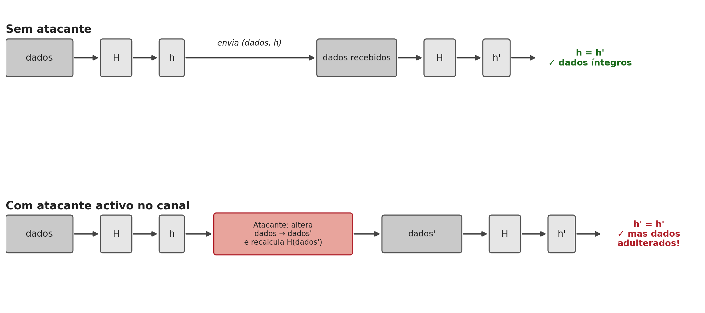
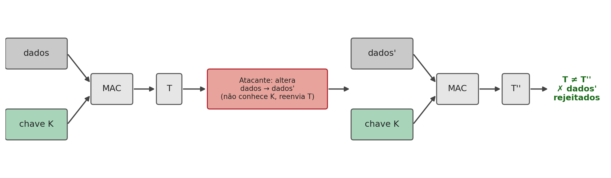
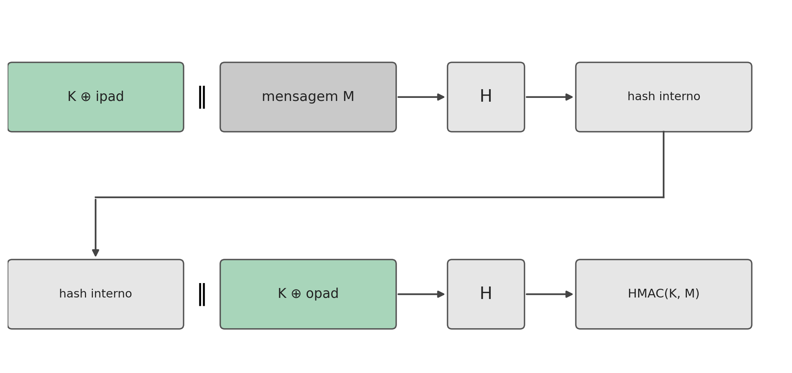

5 Hashing — Propriedades, Ataques, SHA, MAC e HMAC
Introdução
Os capítulos anteriores trataram sempre de confidencialidade: como transformar uma mensagem de forma que só quem possui a chave certa a consiga ler. Mas confidencialidade não é a única propriedade que uma comunicação segura precisa de garantir. Uma mensagem pode viajar perfeitamente cifrada e, ainda assim, ser alterada a meio do caminho, ou não vir de quem diz vir. Este capítulo muda de problema: trata da integridade (a garantia de que os dados não foram alterados) e da autenticação (a garantia de que os dados vêm de quem se espera), e da ferramenta que serve de base a ambas, a função de hash.
5.1 O Que é uma Função de Hash
Uma função de hash transforma uma entrada de tamanho arbitrário numa saída de tamanho fixo, geralmente muito mais curta:
\[h = H(x)\]
onde \(x\) é o valor (ou mensagem) a ser resumido, \(H\) é a função de hash, e \(h\) é o valor de hash (também chamado digest ou resumo criptográfico). \(x\) é conhecido como a pré-imagem de \(h\).
Duas características, à partida simples, definem o essencial de uma função de hash: é determinística (a mesma entrada produz sempre a mesma saída) e é uma função de compressão (entradas de qualquer tamanho, potencialmente enormes, produzem sempre uma saída do mesmo tamanho fixo, tipicamente entre 128 e 512 bits). Esta segunda característica tem uma consequência matemática inevitável: como o conjunto de entradas possíveis é infinito e o conjunto de saídas é finito, têm de existir colisões, pares de entradas diferentes que produzem o mesmo valor de hash. A segurança de uma função de hash nunca pode assentar em evitá-las por completo, isso é impossível, mas sim em torná-las computacionalmente impossíveis de encontrar deliberadamente. É exactamente isso que a secção seguinte formaliza.
5.2 Propriedades de uma Função de Hash
Nem toda a função que comprime dados é útil em criptografia. As propriedades seguintes (Stallings 2020) distinguem uma função de hash fraca de uma forte:
| Requisito | Descrição |
|---|---|
| Tamanho de entrada variável | \(H\) pode ser aplicada a um bloco de dados de qualquer tamanho |
| Tamanho de saída fixo | \(H\) produz sempre uma saída de comprimento fixo |
| Eficiência | \(H(x)\) é fácil de calcular para qualquer \(x\), tornando praticáveis implementações em hardware e em software |
| Resistência a pré-imagem (one-way) | Dado um valor de hash \(h\), é computacionalmente inviável encontrar \(y\) tal que \(H(y) = h\) |
| Resistência a segunda pré-imagem (colisão fraca) | Dado um bloco \(x\), é computacionalmente inviável encontrar \(y \neq x\) com \(H(y) = H(x)\) |
| Resistência a colisões (colisão forte) | É computacionalmente inviável encontrar qualquer par \((x,y)\), com \(x \neq y\), tal que \(H(x) = H(y)\) |
| Pseudoaleatoriedade | A saída de \(H\) cumpre os testes estatísticos padrão de aleatoriedade |
As quatro primeiras propriedades definem um hash fraco: suficiente para detectar erros acidentais de transmissão, mas não para resistir a um atacante. As três últimas, acrescentadas, definem um hash forte, o único adequado a usos criptográficos. Vale a pena não confundir as duas últimas propriedades de resistência a colisões, que são fáceis de trocar:
- Segunda pré-imagem: o atacante já tem um \(x\) específico (por exemplo, um contrato original) e quer encontrar outro documento \(y\) com o mesmo hash, para o substituir sem que a substituição seja detectada.
- Colisão: o atacante não tem nenhum documento de partida fixo, só quer encontrar um par qualquer \((x,y)\) que colida, o que é estruturalmente mais fácil de conseguir.
Esta diferença tem uma consequência prática importante, conhecida como o paradoxo do aniversário: encontrar uma colisão qualquer para uma função de hash de \(n\) bits de saída custa, em média, apenas cerca de \(2^{n/2}\) tentativas, muito menos do que os \(2^n\) que a intuição sugeriria, e muitíssimo menos do que os \(2^n\) necessários para quebrar a resistência a pré-imagem ou a segunda pré-imagem. É por esta razão que o tamanho da saída de uma função de hash tem de ser aproximadamente o dobro do nível de segurança pretendido: um hash de 256 bits dá apenas \(2^{128}\) de segurança contra colisões, não \(2^{256}\).
5.3 A Família SHA
Ao longo das últimas três décadas, várias famílias de funções de hash disputaram o lugar de norma de facto. As primeiras, o MD4 e o MD5 (Message Digest, Ron Rivest, 1990 e 1992), com saídas de apenas 128 bits, acabaram formalmente quebradas: Wang e Yu apresentaram um método prático para gerar colisões em MD5 em 2005 (Wang e Yu 2005), e hoje o MD5 não deve ser usado para nenhum fim criptográfico, apenas para verificações de integridade não adversariais (por exemplo, confirmar que uma transferência de ficheiro não foi corrompida por erro).
O SHA (Secure Hash Algorithm), normalizado pelo NIST, tornou-se a família de referência (National Institute of Standards and Technology 2015). O SHA-1 (160 bits, 1995) manteve-se em uso generalizado durante duas décadas, apesar de fragilidades teóricas conhecidas desde 2005, até a Google e o CWI Amsterdam publicarem, em 2017, a primeira colisão prática (o ataque SHAttered), dois PDFs distintos com o mesmo hash SHA-1 (Stevens et al. 2017). Desde então, o SHA-1 está formalmente desaconselhado para qualquer uso que dependa de resistência a colisões, incluindo certificados digitais e assinaturas.
A família actualmente recomendada é o SHA-2, que agrupa várias variantes consoante o tamanho da saída e da estrutura interna:
| Algoritmo | Tamanho da mensagem | Tamanho do bloco | Tamanho da palavra | Tamanho do resumo |
|---|---|---|---|---|
| SHA-1 | \(< 2^{64}\) | 512 | 32 | 160 |
| SHA-224 | \(< 2^{64}\) | 512 | 32 | 224 |
| SHA-256 | \(< 2^{64}\) | 512 | 32 | 256 |
| SHA-384 | \(< 2^{128}\) | 1024 | 64 | 384 |
| SHA-512 | \(< 2^{128}\) | 1024 | 64 | 512 |
| SHA-512/224 | \(< 2^{128}\) | 1024 | 64 | 224 |
| SHA-512/256 | \(< 2^{128}\) | 1024 | 64 | 256 |
O SHA-256 é hoje a escolha por omissão para a generalidade das aplicações novas, usado, entre outros, no TLS, no Git e no Bitcoin. Na prática, calcular um resumo é uma operação trivial em qualquer sistema Unix:
$ echo "Olá Mundo! João Pavão" > hashtext.txt
$ openssl md5 hashtext.txt
MD5(hashtext.txt)= dafa6ed4f172ed103c577334bdfa375d
$ openssl sha1 hashtext.txt
SHA1(hashtext.txt)= f8372d55ba7ae3655ec0f886ef658f94879646c1Note-se que os dois resumos, apesar de calculados sobre o mesmo ficheiro, não têm nenhuma relação visível entre si, precisamente o comportamento pseudoaleatório exigido na Tabela 5.1.
5.4 Verificar a Integridade — e os Seus Limites
O uso mais directo de uma função de hash é verificar se um dado se manteve íntegro: o emissor calcula \(h = H(\text{dados})\) e envia os dois juntos; o receptor recalcula o hash sobre os dados recebidos e compara com o valor recebido. Qualquer alteração aos dados, ainda que de um único bit, muda o valor de hash de forma imprevisível (propriedade de pseudoaleatoriedade), tornando a alteração detectável.
Mas este esquema tem uma falha grave, que só se torna visível quando se considera um atacante activo, capaz de intervir no canal de comunicação, e não apenas um erro acidental de transmissão:

A raiz do problema: \(H\) é pública. Não há nenhum segredo envolvido no cálculo do hash, por isso um atacante capaz de alterar os dados em trânsito é igualmente capaz de recalcular o hash correspondente aos dados alterados. O valor de hash, sozinho, prova que os dados não sofreram um erro acidental, mas não prova nem que os dados vêm de quem diz vir, nem que não foram deliberadamente adulterados por alguém no meio do caminho. Falta um ingrediente que só o emissor e o receptor legítimos possuam, e que um atacante não consiga reproduzir: um segredo partilhado.
5.5 Autenticação de Mensagens: o MAC
A solução mais simples para o problema identificado na secção anterior é introduzir uma chave secreta \(K\), partilhada apenas entre emissor e receptor, no próprio cálculo do resumo. Um MAC (Message Authentication Code) é exactamente isto: uma função que recebe a mensagem e uma chave secreta, e produz uma marca (tag) curta que só quem conhece a chave consegue calcular ou verificar corretamente.
\[T = \text{MAC}_K(\text{dados})\]

Um exemplo concreto ajuda a fixar a ideia. Suponha-se uma ordem de transferência bancária, “Transferir 100€ para o IBAN PT50…”, protegida com \(\text{MAC}_K\). O banco recebe a mensagem e a marca, recalcula \(\text{MAC}_K\) sobre a mensagem recebida com a mesma chave \(K\) (combinada previamente com o cliente, por exemplo ao activar o cartão) e compara. Se um atacante intercepta a mensagem e altera “100€” para “10000€”, a marca antiga deixa de corresponder à mensagem alterada, e calcular a marca correcta para a nova mensagem exigiria conhecer \(K\), exactamente o que faltava ao atacante na Figura 5.1.
Note-se a diferença fundamental em relação a um hash simples: um MAC garante duas propriedades de uma só vez, integridade (os dados não foram alterados) e autenticidade (os dados só podem ter vindo de alguém que conhece \(K\), ou seja, do emissor legítimo). É por isto que os MAC partilham o mesmo modelo de confiança das cifras simétricas: exigem uma chave previamente combinada entre as duas partes, através de um canal seguro.
A ideia mais directa para construir um MAC a partir de uma função de hash já existente é combinar a mensagem com a chave secreta antes de a passar por \(H\). Não é por acaso que esta é exactamente a lógica de vários desenhos clássicos: cifrar o hash da mensagem com uma chave simétrica, cifrar só o hash em vez da mensagem inteira, ou, na sua forma mais simples, calcular \(H(\text{dados} \Vert S)\) usando apenas um valor secreto \(S\) partilhado, sem qualquer cifra envolvida, o suficiente para autenticação e integridade, ainda que sem confidencialidade. Esta última construção, um hash simples com um segredo concatenado à mensagem, parece resolver o problema, mas esconde uma armadilha que a secção seguinte desmonta.
5.6 HMAC
Concatenar ingenuamente uma chave a uma mensagem antes de a passar por uma função de hash parece razoável, mas as duas formas óbvias de o fazer têm problemas distintos (Preneel e Oorschot 1995).
Prefixo, \(H(K \Vert M)\). As funções da família MD5/SHA (SHA-1 e SHA-2 incluídos) processam a entrada em blocos, actualizando um estado interno bloco a bloco, e o valor de hash final é literalmente esse estado interno, sem qualquer passo final de fecho. Isto permite um ataque de extensão de comprimento (length-extension attack): conhecendo apenas \(H(K \Vert M)\) (não \(K\)), um atacante consegue calcular \(H(K \Vert M \Vert M')\), uma marca válida para uma mensagem estendida, para qualquer \(M'\) à sua escolha.
Um exemplo simplificado torna isto concreto (não é assim que o SHA-256 funciona por dentro, mas ilustra exactamente a estrutura do problema). Imagine-se uma função de hash de brinquedo que processa a mensagem bloco a bloco, actualizando um estado que começa em 0, e devolve esse estado directamente como resultado final:
\[\text{estado} \leftarrow (\text{estado} + \text{bloco}) \bmod 100\]
Seja a chave secreta \(K=7\) (um bloco) e a mensagem \(M=42\) (outro bloco). A marca calculada pelo emissor é:
\[H(K \Vert M) = (0 + 7 + 42) \bmod 100 = 49\]
Um atacante que intercepte a mensagem e a marca \(49\) não precisa de conhecer \(K\) para forjar uma marca válida para a mensagem estendida \(M \Vert M'\), com \(M'=13\) à sua escolha: basta continuar o mesmo cálculo a partir do estado que já conhece, \(49\):
\[(49 + 13) \bmod 100 = 62\]
que é exactamente o valor que o receptor obteria ao calcular \(H(K \Vert M \Vert M')\) do zero, com a chave verdadeira (\(0+7+42+13=62\)). O atacante nunca soube que \(K=7\): só precisou de saber que a marca antiga era o estado interno, e que continuar o cálculo a partir dela é tão fácil como calculá-lo da primeira vez. É exactamente esta propriedade, o valor de hash final ser reutilizável como ponto de partida para continuar o cálculo, que o MD5, o SHA-1 e o SHA-256 partilham genuinamente (a única complicação real nestes algoritmos é um bloco extra de padding, que o atacante também consegue reconstruir a partir do comprimento conhecido de \(K \Vert M\)), e que torna este ataque prático, não apenas um exercício académico.
Sufixo, \(H(M \Vert K)\). Colocar a chave no fim, em vez de no início, evita o ataque anterior, porque o atacante deixa de conseguir continuar o cálculo a partir de um estado que já inclui a chave. Mas troca-o por outro problema: encontrar duas mensagens \(M_1 \neq M_2\) que colidam antes de \(K\) ser processado já basta para forjar uma marca válida para \(M_2\) a partir da marca de \(M_1\) (a chave, aplicada depois, produz o mesmo resultado para ambas), um ataque prático contra hashes com resistência a colisões fraca, como o MD5 (Secção 5.3).
A construção HMAC (Hash-based MAC), proposta por Bellare, Canetti e Krawczyk (Bellare, Canetti, e Krawczyk 1996) e normalizada no RFC 2104 (Krawczyk, Bellare, e Canetti 1997), evita os dois problemas ao aplicar \(H\) duas vezes, numa estrutura aninhada, em vez de concatenar a chave uma única vez:
\[\text{HMAC}(K, M) = H\big((K' \oplus \text{opad}) \,\Vert\, H((K' \oplus \text{ipad}) \,\Vert\, M)\big)\]
onde \(K'\) é a chave ajustada ao tamanho do bloco de \(H\) (completada com zeros se for mais curta, ou ela própria resumida por \(H\) se for mais comprida), e ipad e opad são duas constantes fixas e públicas (o byte 0x36 e o byte 0x5C, repetidos até ao tamanho do bloco), escolhidas apenas por terem uma distância de Hamming grande entre si, de forma a que as duas chaves internas, \(K' \oplus \text{ipad}\) e \(K' \oplus \text{opad}\), se comportem como duas chaves independentes:

Esta estrutura em duas camadas resolve os dois ataques da lista anterior: o hash exterior nunca expõe o seu estado interno a partir de dados conhecidos do atacante (o hash interior já consumiu a chave antes disso), o que elimina a extensão de comprimento, e uma eventual colisão no hash interior deixa de ser suficiente para forjar uma marca, porque o resultado ainda tem de passar pelo segundo \(H\), protegido pela segunda chave.
Um resultado notável do trabalho original de Bellare, Canetti e Krawczyk é que a segurança do HMAC não depende da resistência a colisões de \(H\), depende de uma propriedade mais fraca e mais robusta da sua função de compressão interna. É por isto que o HMAC-MD5 e o HMAC-SHA1 continuam, na prática, a não ter nenhum ataque conhecido, apesar de o MD5 e o SHA-1 estarem formalmente quebrados como funções de hash de uso geral (Secção 5.3): quebrar o HMAC exigiria um tipo de ataque bastante diferente, e mais difícil, do que simplesmente encontrar colisões em \(H\). Ainda assim, a recomendação prática é usar sempre HMAC-SHA256 ou superior em sistemas novos, por prudência e para evitar depender de subtilezas desta natureza.
O HMAC é hoje um dos mecanismos de autenticação mais usados na prática: protege registos do TLS em versões anteriores à 1.3, autentica pacotes no IPsec, assina tokens JWT (JSON Web Tokens, no algoritmo HS256), e é a base da assinatura de pedidos em APIs como as da AWS.
5.7 Síntese do Capítulo
Este capítulo mudou de confidencialidade para integridade e autenticação:
- Uma função de hash comprime uma entrada de qualquer tamanho numa saída fixa, de forma determinística; como o domínio é infinito e o contradomínio finito, colisões existem sempre, o objectivo é torná-las difíceis de encontrar
- Um hash forte exige, além da eficiência e do tamanho fixo de saída, resistência a pré-imagem, a segunda pré-imagem, e a colisões; esta última é a mais fraca das três, e cai ao fim de apenas \(2^{n/2}\) tentativas (paradoxo do aniversário), não \(2^n\)
- A família SHA é a referência actual; o MD5 e o SHA-1 têm colisões práticas conhecidas (Wang e Yu, 2005; SHAttered, 2017) e estão desaconselhados; o SHA-256 é hoje a escolha recomendada
- Uma função de hash sem chave não resiste a um atacante activo: qualquer pessoa consegue recalculá-la, por isso não prova nem integridade nem autenticidade contra um adversário capaz de intervir no canal
- Um MAC resolve isto introduzindo uma chave secreta partilhada no cálculo da marca, dando simultaneamente integridade e autenticidade
- Concatenar ingenuamente a chave à mensagem (
H(K‖M)ouH(M‖K)) tem problemas conhecidos, extensão de comprimento no primeiro caso, dependência total da resistência a colisões no segundo - O HMAC resolve ambos aplicando \(H\) duas vezes, numa estrutura aninhada com duas chaves derivadas (
ipad/opad); a sua segurança não depende da resistência a colisões de \(H\), o que explica porque o HMAC-SHA1 continua sem ataques práticos conhecidos, apesar de o SHA-1 já não ser seguro como hash de uso geral
5.8 Para Pensar
O SHA-1 já não é seguro contra colisões, e está formalmente desaconselhado para assinaturas digitais e certificados. Ainda assim, o HMAC-SHA1 continua em uso em vários sistemas legados sem ser considerado uma falha crítica. Tendo em conta a distinção entre as propriedades de um hash (Secção 5.2) e o que a demonstração de segurança do HMAC efectivamente exige (Secção 5.6), porque é que a quebra da resistência a colisões de uma função de hash não implica automaticamente a quebra do MAC construído sobre ela?